| SOURCE | TITLE| IMAGE MATCH | click to source page |
| www.hipstamp.com | Ajman- 1973- Apollo 11-17-With First DAY of Postal Cancel ... | 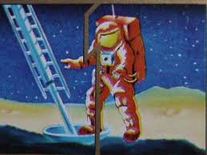 |
| www.ebay.com | Rare NEIL AMSTRONG 1st man in the moon Sticker 1983 ... | 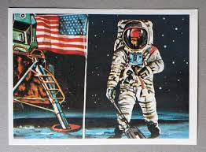 |
| www.mutualart.com | Ed Vebell | John Glenn in Space | MutualArt | 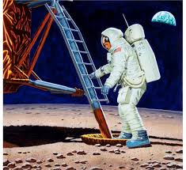 |
| www.dreamstime.com | Postage Stamp Ajman State, United Arab Emirates 1973, Apollo ... | 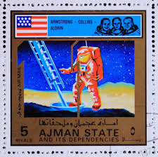 |
| www.ebay.com | Apollo NASA Astronaut Moon Landing Poster 1969-1989 LE ... | 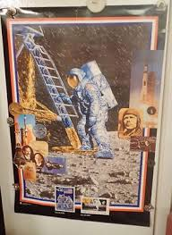 |
| www.super-hobby.com | Apollo 11 Astronaut on the Moon Revell 03702 | 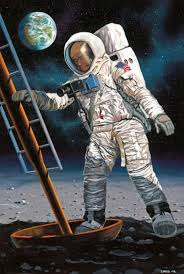 |
| offerup.com | Beautiful Artwork Of An Astronaut Lost In Space By Artist Leda ... | 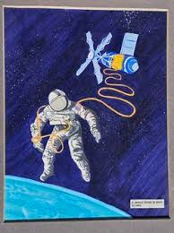 |
| www.askart.com | artist Auction Records & Pricing | askART | 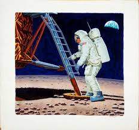 |
| www.ebay.com | Haiti 1973 set imperved Space/Moon stamps (not issued) MNH ... | 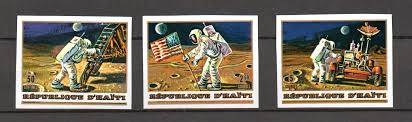 |
| www.scale-model-boulevard.com | Space model: Box 50 years Apollo 11: Astronaut on the moon ... | 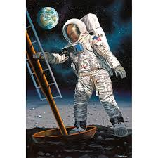 |
| www.texasmonthly.com | Tiptoeing On the Ocean of Storms – Texas Monthly | |
| familytreedesign.net | Apollo 11 NASA Mission Poster – Familytree | 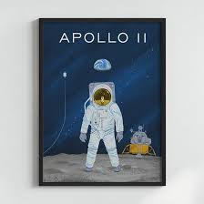 |
| scoutandforge.com | Vintage Framed Hologram 3D Print, Apollo 11 Lands First Men ... | 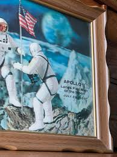 |
| www.facebook.com | Apollo 11 Moon Landing Postage Stamp Anniversary | 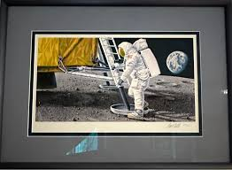 |
| www.tapatalk.com | The DC Comics Time Capsule: July 1969 - CollectedEditions.com | 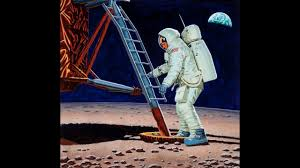 |
| www.collectspace.com | One giant stamp for mankind: 40 years of 'First Man on the ... | 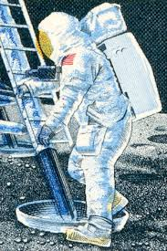 |
| www.timesrecordnews.com | Youth ArtZeum Outer Space Exhibit | 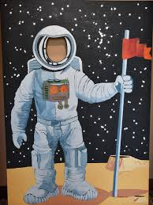 |
| www.youtube.com | Apollo 11 partie 2 vidéo test - YouTube | |
| www.etsy.com | Tintin in the Dark Side of the Moon º Rubén Rangel © Limited ... | 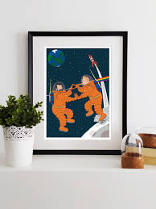 |
| moody.rice.edu | link is external) | 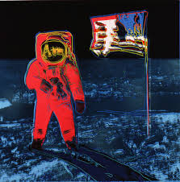 |
| www.artnet.com | Edward Vebell | Artnet | 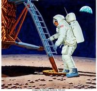 |
| www.pineappleretro.co.uk | Vintage 1960s Set Of Paints In Tin - Great Graphics - Moon ... | 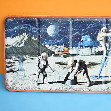 |
| www.instagram.com | This first photo is the only one I've shared showing my ... | 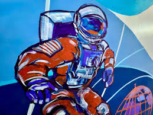 |
| grapefruitmoongallery.com | Rocket to the Moon • Grapefruit Moon Gallery Sorry, It's Sold | 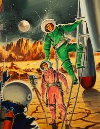 |
| www.icanvas.com | The Final Impossibility: Man's Tra - Canvas Wall Art ... | 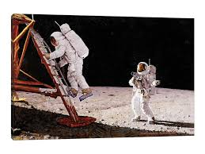 |
| www.negretevideofilm.com | Mark Negrete, award winning filmmaker, specializes in video ... | 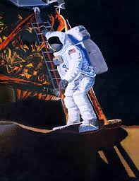 |
| nikipholie.eu | The Conquest of Space" original lithograph and stamps ... | 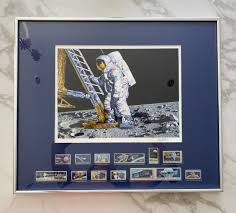 |
| nss.org | Our Future in the Space Workforce: A Review of the 2024 ... | 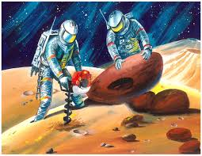 |
| www.amazon.com | Amazon.com: We Need You NASA Recruitment Retro Poster Space ... | |
| www.chairish.com | Andy Warhol Estate Vintage 1989 1st Edition Lithograph Print ... | 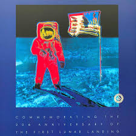 |
| www.moas.org | To Choose Our Destiny: The Lasting Legacy of the Apollo 11 ... | 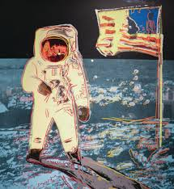 |
| cosmofunnel.com | MARS 2030 : Blue Sunset in a Strange Land | CosmoFunnel.com | |
| www.reddit.com | Estranged" An acrylic painting by me, Flooko. Not something ... | |
| www.callespaceart.com | FIRST MAN ON THE MOON | 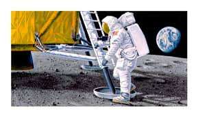 |
| www.instagram.com | Finding Space to Play. 48” x 36” @artlanticfineartjupiter ... | |
| www.sothebys.com | ANDY WARHOL | MOONWALK (SEE F. & S. IIB.404-405 ... | 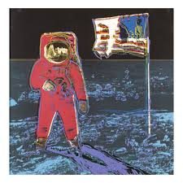 |
| www.facebook.com | Art Lovers Australia added a new photo. - Art Lovers Australia | 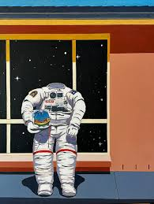 |
| www.mutualart.com | Chris Calle | Marshall Islands Milestones in Space, First Man ... | 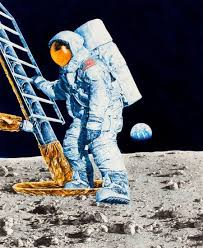 |
| fineartamerica.com | Apollo 11 Painting by Don Dixon - Fine Art America | |
| www.firerockfineart.com | Moonwalk Pink FS 405 - From the Moonwalk Series by Andy Warhol | 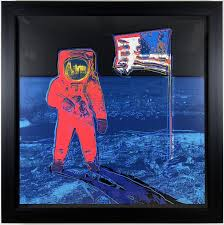 |
| www.aoc.gov | The Art Collection | 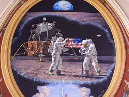 |
| www.redbubble.com | Space Race TIME Cover " Poster for Sale by globalthings ... | 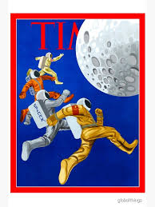 |
| gingerpopstudio.com | Space Time Suspended | Space Art | GingerPopStudio | 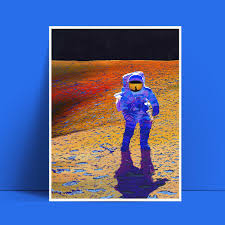 |
| www.flaglernewsweekly.com | Lieutenant Governor Jeanette Nuñez Announces Winners of the ... | 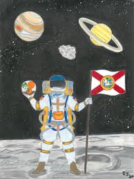 |
| www.reddit.com | Anyone have any info on this MFA booklet? : r/nasa | 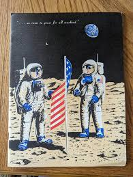 |
| neenahfoundry.weebly.com | 2121 Brooks Ave, Neenah - Home | 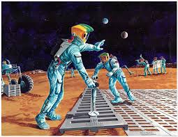 |
| www.cnn.com | First Moon Landing Fast Facts | CNN | 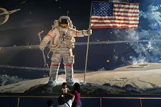 |
| timecoverstore.com | The Next Space Race Framed Print by Illustration by ... | 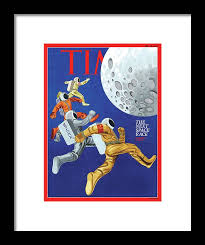 |
| rankinwillard.com | Astronaut - Fine Art Print | |
| www.art.com | Apollo 11 Wall Art Prints | Art.com | 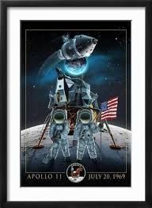 |
| superfriends.fandom.com | Apollo 15 | SuperFriends Wiki | Fandom | 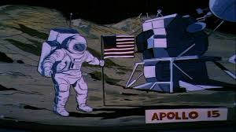 |
| www.askart.com | Howard Vachel Brown Auction Records & Pricing | askART | 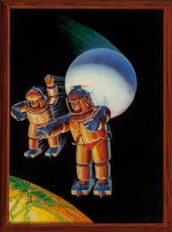 |
| info.mysticstamp.com | JFK Calls to Put a Man on the Moon | Mystic Stamp Discovery ... | 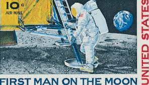 |
| www.aoc.gov | America's First Moon Landing | Architect of the Capitol | 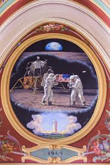 |
| www.arpc.afrc.af.mil | Abandoned paintings make Air Force history > Air Reserve ... | 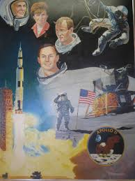 |
| www.swanngalleries.com | Lot - JAMES BARKLEY First moon landing. | 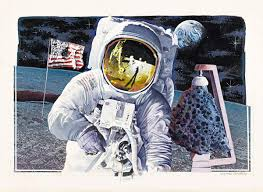 |
| windriverstudios.com | Wind River Studios Charles Knotek Wall Art | |
| thespacestore.com | First Men on the Moon Limited Edition Canvas by Chris Calle ... | 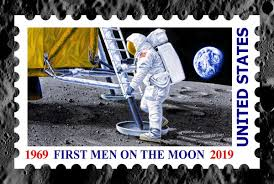 |
| www.ebay.com | UAE Dubai 1969 - Space - MNH - Moon Landing Air Mail - 3 ... | 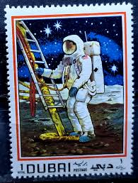 |